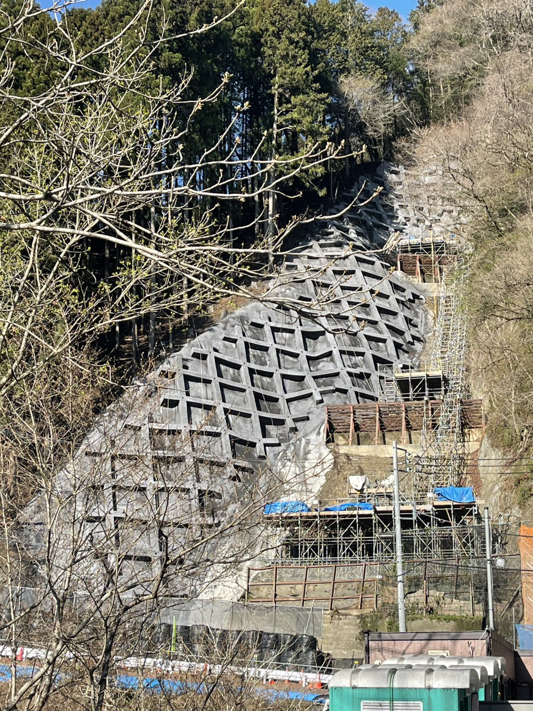
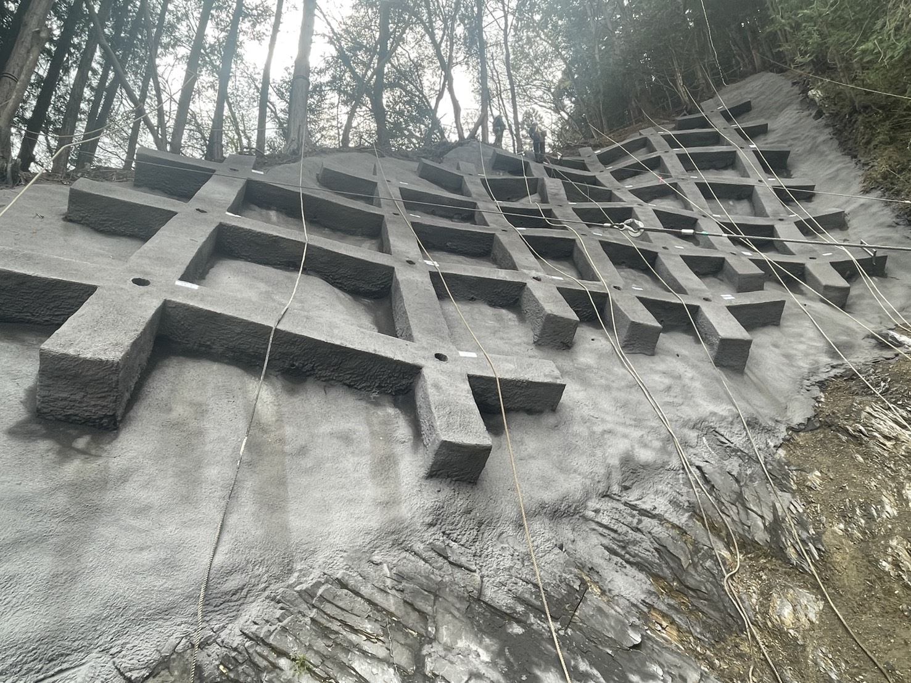
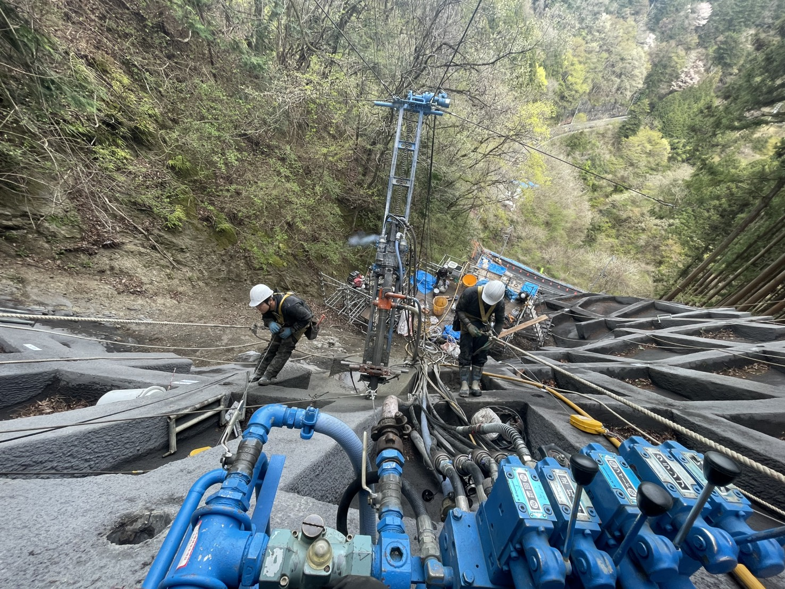

道路から90m上。足場なし。小型機1台。109本、全数完工。「こういう現場、うちにもある」と思ったら読んでください。



「足場が組めないから無理」は、選択肢の一つにすぎない。この現場で証明されたのは、工法を変えれば施工できる、という事実です。
電話する前に、どんな会社か確認してください。3分27秒のドキュメンタリーです。
「この現場に使えるか」だけ判断してください。技術説明はしません。10分で終わります。